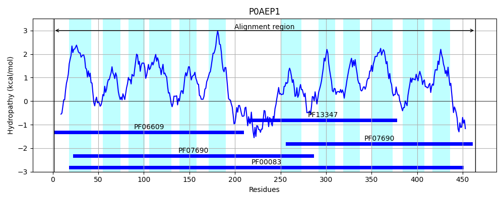
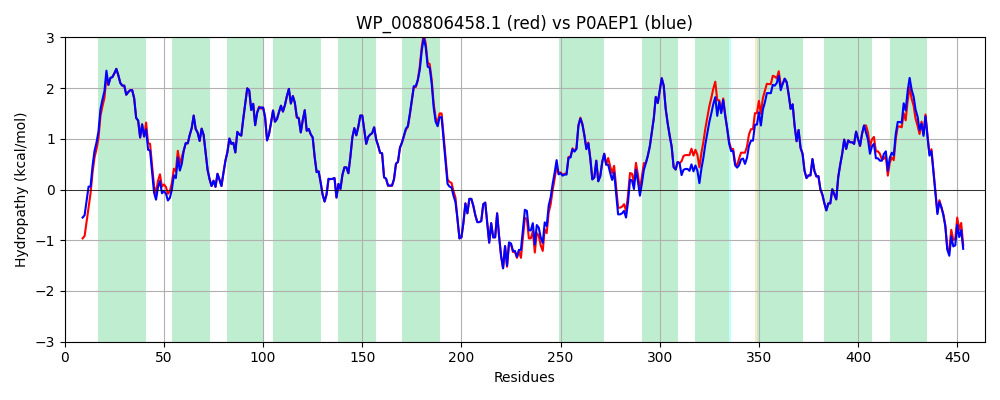

Hit Accession: P0AEP1
Hit TCID: 2.A.1.1.1
Hit Description: gnl|BL_ORD_ID|8786 gnl|TC-DB|P0AEP1|2.A.1.1.1 Galactose-proton symporter OS=Escherichia coli (strain K12) OX=83333 GN=galP PE=1 SV=1
Mach Len: 464
e:0.000000
Query TMS Count : 12
Hit TMS Count: 12
TMS-Overlap Score: 12.950000
Predicted Substrates:CHEBI:2179;D-fucopyranose, CHEBI:90759;2-deoxy-D-galactopyranose, CHEBI:84755;2-deoxy-D-glucopyranose, CHEBI:4265;aldehydo-D-xylose, CHEBI:5256;galactose, CHEBI:4139;D-galactopyranose
BLAST Alignment:
Score: 2224 , Bit scores: 861 bits, E-value: 0.0e+00, Alignment length: 464, Percentage identity: 93
Query: 1 MPDNKKQGRSNKTMTFFVCFLAALAGLLFGLDIGVIAGALPFIANEFQISAHTQEWVVSSMMFGAAVGAVGSGWLSFKLGRKKSLMIGAILFVAGSLFSAAAPNVEILLVSRVLLGLAVGVASYTAPLYLSEIAPEKIRGSMISMYQLMITIGILGAYLSDTAFSYSGAWRWMLGVIIIPAVLLLIGVIFLPDSPRWFAAKRRFVDAERVLLRLRDTSAEAKRELDEIRESLKVKQSGWSLFKDNSNFRRAVFLGILLQVMQQFTGMNVIMYYAPKIFELAGYANTTEQMWGTVIVGLTNVLATFIAIGLVDRWGRKPTLILGFIVMAAGMGVLGSMMHIGIHSSTAQYIAVLMLLMFIVGFAMSAGPLIWVLCSEIQPLKGRDFGITCSTATNWIANMIVGATFLTMLNSLGSANTFWVYGGLNVLFILLTIWLIPETKNVSLEHIERNLMQGRPLREIGARD 464
MPD KKQGRSNK MTFFVCFLAALAGLLFGLDIGVIAGALPFIA+EFQI++HTQEWVVSSMMFGAAVGAVGSGWLSFKLGRKKSLMIGAILFVAGSLFSAAAPNVE+L++SRVLLGLAVGVASYTAPLYLSEIAPEKIRGSMISMYQLMITIGILGAYLSDTAFSY+GAWRWMLGVIIIPA+LLLIGV FLPDSPRWFAAKRRFVDAERVLLRLRDTSAEAKRELDEIRESL+VKQSGW+LFK+NSNFRRAVFLG+LLQVMQQFTGMNVIMYYAPKIFELAGY NTTEQMWGTVIVGLTNVLATFIAIGLVDRWGRKPTL LGF+VMAAGMGVLG+MMHIGIHS +AQY A+ MLLMFIVGFAMSAGPLIWVLCSEIQPLKGRDFGITCSTATNWIANMIVGATFLTMLN+LG+ANTFWVY LNVLFILLT+WL+PETK+VSLEHIERNLM+GR LREIGA D
Sbjct: 1 MPDAKKQGRSNKAMTFFVCFLAALAGLLFGLDIGVIAGALPFIADEFQITSHTQEWVVSSMMFGAAVGAVGSGWLSFKLGRKKSLMIGAILFVAGSLFSAAAPNVEVLILSRVLLGLAVGVASYTAPLYLSEIAPEKIRGSMISMYQLMITIGILGAYLSDTAFSYTGAWRWMLGVIIIPAILLLIGVFFLPDSPRWFAAKRRFVDAERVLLRLRDTSAEAKRELDEIRESLQVKQSGWALFKENSNFRRAVFLGVLLQVMQQFTGMNVIMYYAPKIFELAGYTNTTEQMWGTVIVGLTNVLATFIAIGLVDRWGRKPTLTLGFLVMAAGMGVLGTMMHIGIHSPSAQYFAIAMLLMFIVGFAMSAGPLIWVLCSEIQPLKGRDFGITCSTATNWIANMIVGATFLTMLNTLGNANTFWVYAALNVLFILLTLWLVPETKHVSLEHIERNLMKGRKLREIGAHD 464 | Protein Hydropathy Plots: |
|---|
 |  |
Pairwise Alignment-Hydropathy Plot:
|
|---|
|  |